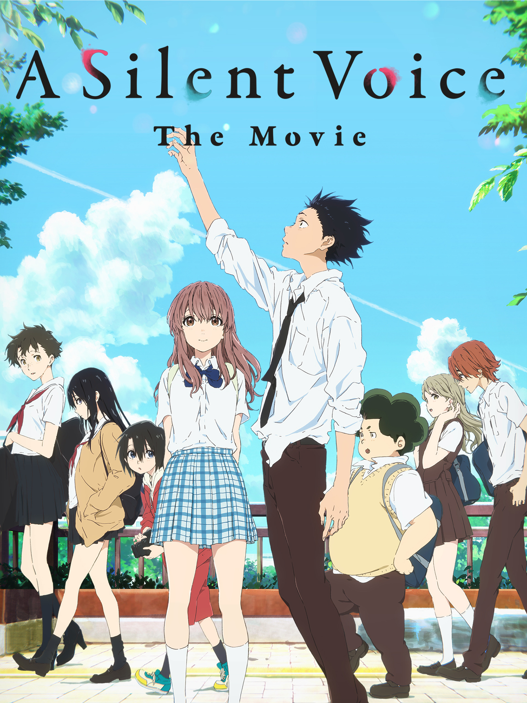

A Silent Voice is a Japanese animated movie produced by Kyoto Animation. It was released in 2016 and directed by Naoko Yamada.
A Silent Voice follows Shoya Ishida, a boy who bullied Shoko Nishimiya, a deaf girl who transferred to his school. Because of his actions, Shoko was eventually forced to leave the school, and Shoya later became isolated and bullied by his classmates. Years later, Shoya regrets what he did and tries to find Shoko again so he can apologize and make things right. As they reconnect, they begin to understand each other and face the difficulties caused by their past.
Have always been a big fan of anime, particularly Studio Ghibli and Miyazaki without restricting myself to just them (some of my favourites are actually without either involved). Any film dealing with bullying and its consequences deserves to be applauded for the effort. Bullying, often stemming from something that should be a non-issue but turns out to be an easy target for bullies (for examples if your parents disallow you to play a popular video game for obvious reasons, if you have a posh accent, if you listen to and perform classical music, if you have a physical or social disability, false rumours spread about you, if you were a hard-worker rather than somebody who messed about and disrespected substitute teachers) is something that is very much relevant still and has damaging effects, it is an issue that needs to be addressed and acted upon much more than it is. This is coming from somebody who suffered merciless bullying myself in school, for all the above reasons apart from the first (in my case my school did nothing about it too), and nearly a decade on it has damaged my confidence/self-esteem, made me feel worthless and made my already bad anxiety worse despite getting a degree in music and singing regularly. So as one can probably tell, 'A Silent Voice' really resonated with me on an emotional level. At the same time, it also really made me think and see that there is much more to the issue, the bully, the witnesses and the victim than one would tend to perceive. 'A Silent Voice' also turned out to be a very good film in its own right. It isn't flawless, some of the supporting characters are under-explored and in a few cases inconsistently and one-dimensionally written and some of the story jumps around and doesn't always feel complete. Despite being over two hours, didn't think it was too long considering the number of characters and their stories. If anything, perhaps 'A Silent Voice' would have been even better as a series which would have solved the problems. On the other hand, 'A Silent Voice' has an awful amount to recommend. Great isn't a strong enough word to describe the animation. Rich in meticulous background and character detail, atmospheric and ethereal in colour schemes and alive to nuances in its use of settings and character gestures and expressions, it becomes a character of its own and there are some memorable images throughout like towards the end. The music has whimsy, haunting beauty and understatement, while not overbearing the drama and letting it speak when needed. The song is catchy. The writing is thought-provoking and contemplative, doing it in a way that will make bullying victims and those who bullied alike identify with what is said. A lot of it is remarkably insightful, and even when the film was really resonating with me it taught me a lot about an issue that isn't as black and white as perceived. The story has its issues but has a strong emotional core, with the truly powerful and touching ending leaving me shell-shocked. Not often does one find themselves rooting for a bully as well as the victim, 'A Silent Voice' is one of those rarities. The voice acting is dynamic. In summary, not perfect but very well done. 8/10 Bethany Cox
I really liked the movie "A Silent Voice" because it is a sad but meaningful movie that shows how our actions can affect other people. The story made me feel sorry for Shoko because she experienced bullying and loneliness, but it also made me understand Shoya because he realized his mistakes and tried to change. What I like most about the movie is that it shows that even when we have made mistakes in the past, we can still try to become a better person. It reminds me that sometimes people are fighting their own battles silently, so we should be more kind and understanding toward others. For me, "A Silent Voice" is not only a sad story, but also an inspirational story about forgiveness, second chances, and finding hope even after going through painful experiences.

Image Source/Credit: https://m.media-amazon.com/images/S/pv-target-images/6c34cbba50f21ac5b893abdb7dff3df9e501f954c3ecb95e554db0bd5b23da75.jpg